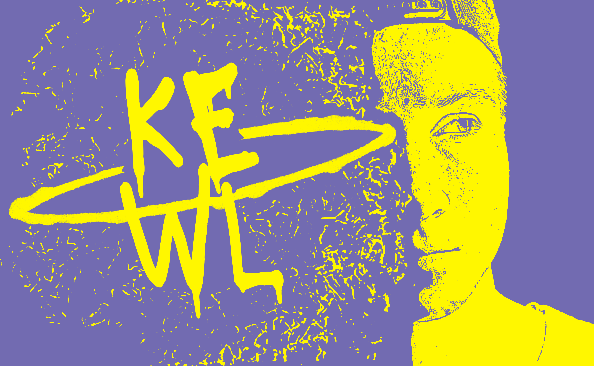
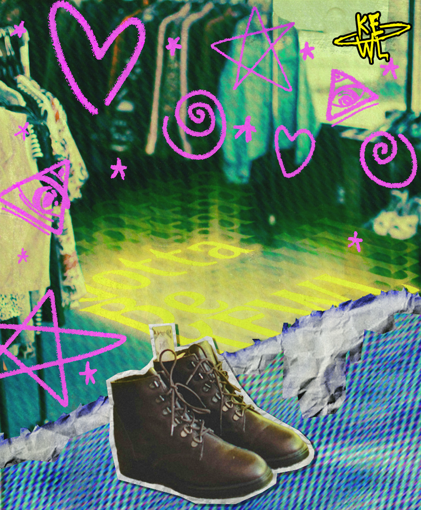
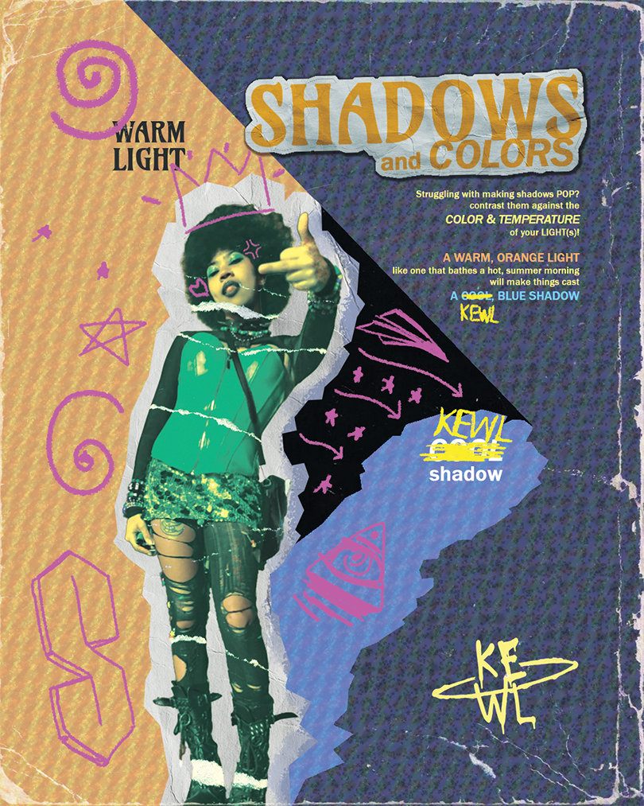
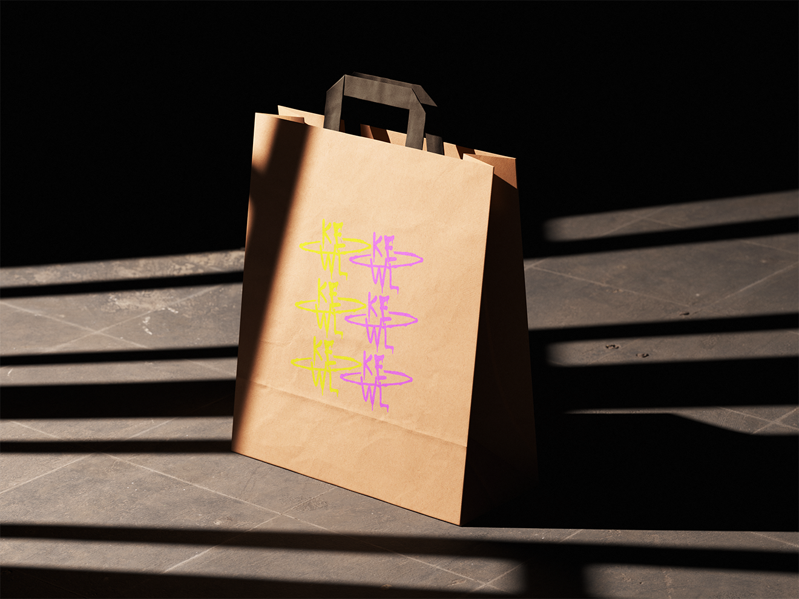
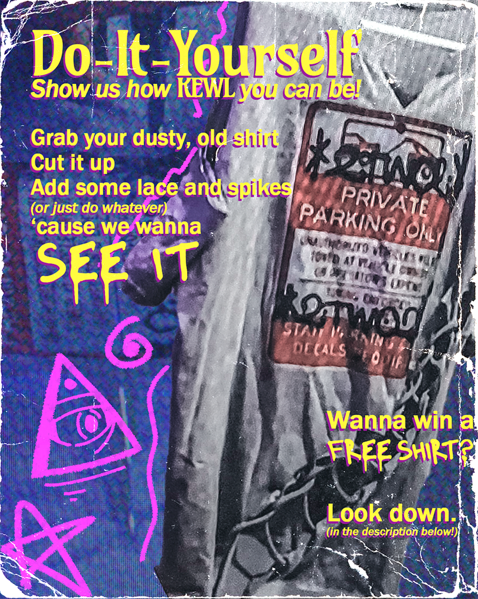

DM's Website
Case Study: Kewl Clothes
Type: Entrepreneurship, Project Management, & Graphic Design | Duration: 2 Months
Gallery





Kewl Clothes is/was/might still be a small clothing accessory and customization business that was started in early 2026 by a close acquaintance of mine (and very quickly, involved myself as well). I was involved initially in a volunteer capacity, but as with a lot of things I find myself doing, I ended up taking on a lot more responsibility than I expected; I served as one of the main graphic designers for the proposed business, and I also took on a lot of the project management and organizational work such as setting up a calendar on ClickUp, checking up on other team members, and assigning deadlines for various tasks. The inital phase of the launch process was very enthusastic, with the goal of providing South Floridian thrifters with cheap and stylish options to customize their thrifted clothes and accessories.
In hindsight, the project was probably a bit too ambitious for the amount of time and resources we had available. This is especially true considering that no one on the team had any prior experience with running a business, and we were all trying to learn as we went along. It was a very hectic, very stressful, and very all-consuming process, and ultimately, we were not able to get the business off the ground before the initial excitement died down.
All of that being said, I don't regret any of the time or effort I put into the project. It helped me learn a lot about project management, graphic design, and entrepreneurship, and it was a really fun experience overall. I also got to work with some really talented artists and designers, and I got to see some of my work come to life in a way that I hadn't before and in a (somewhat) professional context. I think the experience also helped me learn a lot about my own strengths and weaknesses in regards to working on a team and running a project, time management, and handling stress and deadlines, and I think those are all valuable lessons that I can take with me into future projects and endeavors. This is especially true considering that I have a lot of aspirations to start my own business or work in a startup environment in the future, so it was a really valuable learning experience in that regard as well.
The project itself isn't dead, and there is still a plan to get it off the ground at some point in the future, perhaps in the Summer or Fall of 2026, but for now, it's on an indefinite hiatus. In the two months that I was member, of which I admittedly was the most consistent and involved member besides my friend who started the project, we were able to design a number of stylish posters and promotional materials like the ones shown in the gallery above, and we also designed a logo and some mockups for potential products like paper bags and stickers. We also had a lot of fun brainstorming ideas for potential promotional campaigns, and we had a lot of fun working together as a team to try to make the project a reality. Overall, it was a really fun and rewarding experience, and I'm really glad that I was able to be a part of it, even if the launch didn't exactly go as planned!
You can check out the Instagram page for Kewl Clothes here, which has just begun to post promotional materials and updates about the project!